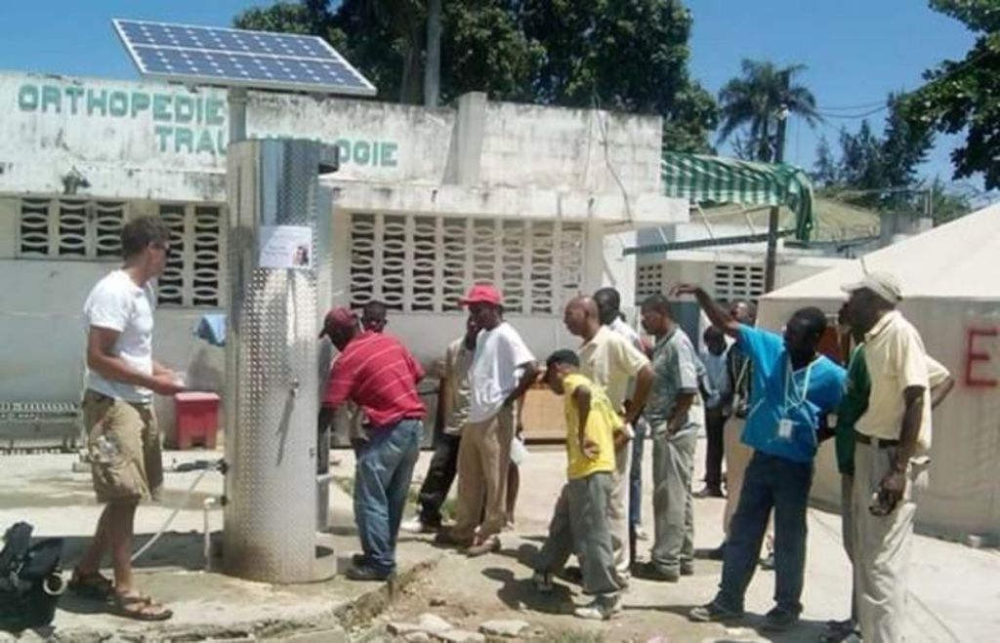
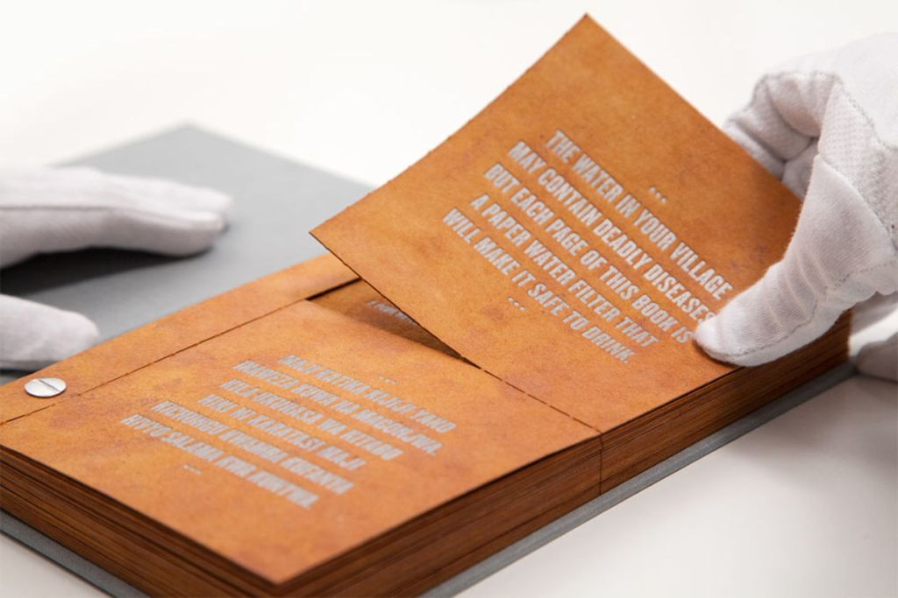
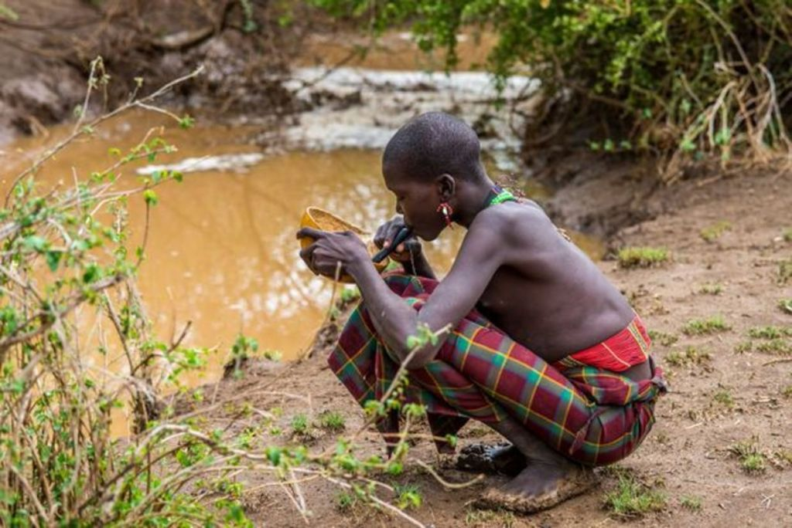
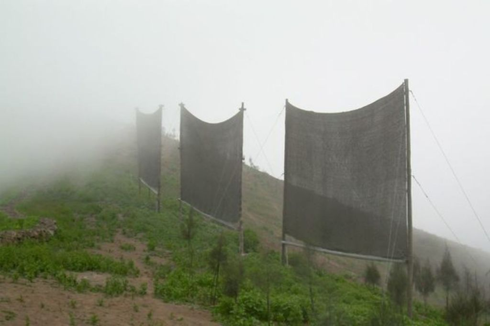
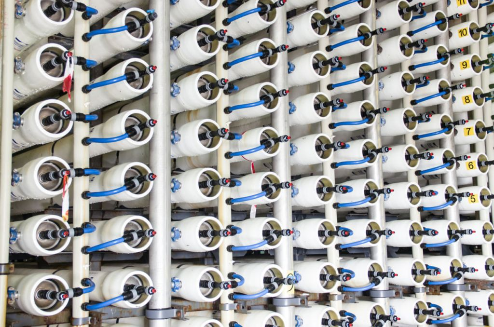
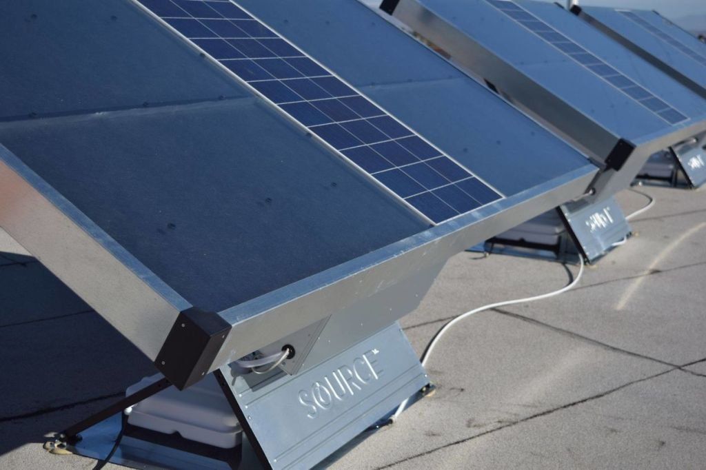

Without water, we die. It should be a fundamental right to have safe water, yet billions of people do not have it. The United Nations has put this issue as a top priority. Part of the UN Sustainable Development Goals – drafted to achieve a better future for all – is the call for universal access to clean water. With so much focus on figuring out how to provide every person in the world with clean water, many companies have thought up some ingenious strategies.
The set goal is for every person to have access to at least 20 -50 liters of safe, clean water a day to drink, to cook with and to bathe. We are still very far away from that goal. It is going to take a global effort to make it a reality. According to the World Health Organization (WHO), over 2.5 billion people currently lack access to safely managed, clean drinking water that can be collected in a round trip of 30 minutes.
The main reasons for water insecurity include:
1. Population growth and the depletion of groundwater supplies
2. Waste through farming irrigation, the production of energy, and other water-hungry industries
3. Contaminated water and poor sanitation (affecting almost 1 billion people). The WHO estimates that contaminated drinking water causes 502,000 deaths a year from diarrhea alone.
The following innovative water tech solutions have been designed to solve the problem of water shortage and contamination to help us achieve a better future for all. All of these new technologies have sprung up around the world to bring water to communities that need it most.
Contamination Fix
Solar Powered Water Filtration

Most of the time, the problem isn’t that there is not enough water, but that the water is contaminated. Usually, this is because, in developing countries, 80 percent of sewage is discharged untreated into waterways.
To do something about this situation, Innovative Water Technologies developed a water filtration system called the SunSpring Hybrid. It is a self-contained portable solar and wind-powered system that provides 20,000 liters of clean water a day for 10 years or more.
The Water Filter Book

Researchers from Carnegie Mellon partnered up with the nonprofit Water is Life to created an informative solution.
This tool is both educational and a water filtration solution in the form of a drinkable book. Every page contains basic water and sanitation advice that is printed on scientific coffee filter paper.
It can be used to purify water and reduce 99.9 percent of bacteria. One book can provide clean water for four years for a single person. They had them distributed these books in Ghana, Kenya, Ethiopia, and Haiti.
The LifeStraw

Vestergaard is a global company innovating solutions that contribute to a healthier and more sustainable world. They created a portable drinking straw that filters dirty unsafe water to make it safe to drink. One straw can purify (through a unique filtration system) a minimum of 1,000 liters of water. It removes 99.9 percent of bacteria and parasites. They are made of plastic or steel.
High-capacity water purifiers for emergency preparedness and emergency response teams are also available.
Shortage Fix
Fog Catchers

When the problem is not contamination, it’s a shortage. Sometimes, villages and whole regions suffer from a severe water shortage because all their groundwater supplies have been used up. One such location is the Sidi Ifni region of Morocco. The area does, however, have an abundance of fog.
This unique situation is what brought into being an ingenious idea by nonprofit Dar Si Hmad. They installed fog collectors on the slopes of Mount Boutmezguida. It is now the largest fog-harvesting project in the world with around 6,300 liters of water harvested daily.
The best part is, it is not a complicated process at all! The mist is caught as it passes through a weave of large vertical nets and trickles into a collection system where it is filtered and mixed with groundwater. The water is then piped into five villages where it provides clean and safe water for 400 people.
Desalination – Water from the Sea

This technology was also created to tackle the problem of water shortage. In Israel, half the country is desert land. Water drought conditions are common. That is why a company here pioneered desalination – the process that removes salt and minerals from seawater. Way back in the 1960s, the first plant was built.
Today, 60 percent of the country’s domestic water comes from desalination from five large and 34 small plants. Three of the plants are partly owned by Israel Desalination Engineering (IDE) technologies. IDE is a world leader in the development and operation of desalination plants including 400 plants in 40 countries like China, India, Australia, and the US.
Water from Air – Zero Mass Water

The Source Hydropanel by startup Zero Mass Water uses solar power to create enough clean drinking water for two-to-three people – roughly 10 liters a day. The way it works is fairly simple. Solar energy heats a sponge-like material to create condensation. The condensation accumulates and is collected in a 30-liter reservoir.
The water in the tank is filtered, and minerals are added to improve the taste of the water.
The system can be connected to a fountain or tap within a home or building for easy access to the ready-to-drink water.